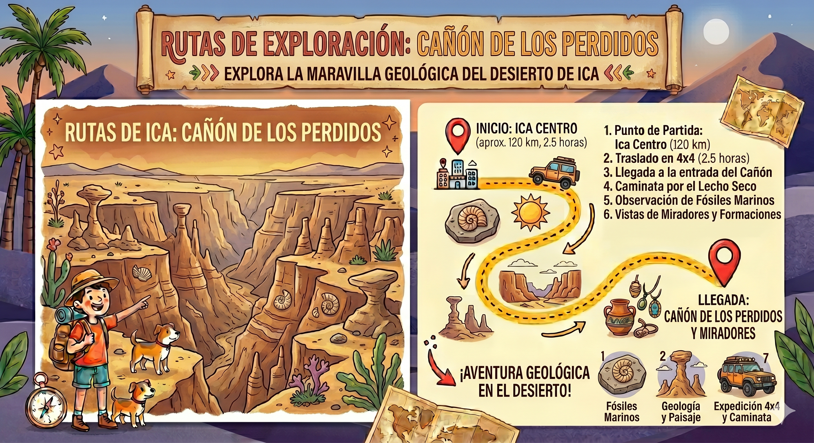

Trekking y Aventura (Full Day)
Una expedición hacia una maravilla natural escondida. Es obligatorio llevar zapatillas de trekking, ropa ligera, sombrero, abundante agua y snacks.
-
06:30 AM
Salida de Ica
Nos reuniremos muy temprano en nuestro punto de encuentro. Abordaremos vehículos especiales rumbo al distrito de Santiago.
-
08:00 AM
Ingreso al Desierto de Ocucaje
Ingresaremos a la Pampa de Clemes. Disfrutaremos de un paisaje árido impresionante y el cerro "La Pirámide".
-
09:30 AM
Llegada y Mirador del Cañón
Llegaremos a la parte superior. Tendremos tiempo para tomar fotografías panorámicas de esta grieta gigante.
-
10:00 AM
Descenso y Trekking
Iniciaremos nuestra caminata descendiendo hacia las profundidades del cañón, observando fósiles marinos milenarios.
-
12:30 PM
Ascenso y Retorno
Comenzaremos a subir nuevamente hacia los vehículos. Podremos rehidratarnos antes de emprender el viaje de regreso.
-
03:30 PM
Llegada a Ica
Arribaremos nuevamente al centro de Ica finalizando esta increíble expedición paleontológica.
Vista de la Ruta
